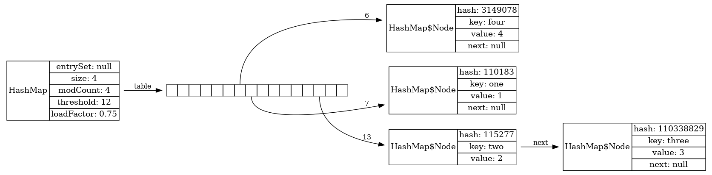

The Lightweight Java Visualizer (LJV)
Кто мы
Иван Пономарев: | |
Олег Ивченко: |
Кто мы
Илья Селиванов: | |
Нурас Ногаев: |
Идея
В режиме runtime построить внутреннее представление графа объектов памяти.
Полученную можно загрузить в онлайн-сервисы
Идея
До нас
Инструмент был разработан Джоном Xамером в 2004 году на Java 1.4
John Hamer. “Visualising Java Data Structures as Graphs”
Проблемы
Неудобство пользования
Отсутствие поддержки инструмента
Изменение Graphviz
Отсутствие ряда возможностей
Решения
Обновление до Java 11
Изменение API инструмента (method chaining)
Выложили на GitHub
Выложили на Maven Central
Полностью изменена генерация графа
Зачем он нужен
Реверс инжиниринг кода
Преподавание
Как использовать
|
Исходный код на языке DOT
digraph Java {
rankdir="TB";
node[shape=plaintext]
n1[label=<
<table border='0' cellborder='1' cellspacing='0'>
<tr>
<td rowspan='3'>String</td>
</tr>
<tr>
<td>coder: 0</td>
</tr>
<tr>
<td>hash: 0</td>
</tr>
</table>
>];
n2[label=<
<table border='0' cellborder='1' cellspacing='0'>
<tr>
<td>72</td>
<td>101</td>
<td>108</td>
<td>108</td>
<td>111</td>
</tr>
</table>
>];
n1 -> n2[label="value",fontsize=12];
}Настройки графа
Базовые типы Java можно представить в более удобном виде
|
Есть возможность перевернуть структуру
|
Можно разукрасить отдельные части графа
|
Интернирование строк
String x = "Hello";
String y = x;
String graph = new LJV().drawGraph(new Object[]{x, y});String x = "Hello";
String y = new String(x);
String graph1 = new LJV().drawGraph(new Object[]{x, y});String x = "Hello";
String y = x + "";
String graph1 = new LJV().drawGraph(new Object[]{x, y});String x = "Hello";
String actualGraph = new LJV().drawGraph(
new String[]{
x,
new String(x).intern(),
new String(x.toCharArray()).intern(),
(x + "").intern()
}
);Кеширование примитивов
public class Example {
private Integer i1 = 42; private Integer i2 = 42;
private Integer i3 = 2020; private Integer i4 = 2020;
private String s1 = "HelloWorld";
private String s2 = "HELL O";
private String s3 = "HelloWorld";
}
//...
String graph = new LJV().drawGraph(new Example());LinkedList
|
ArrayDeque
ArrayDeque<Integer> arrayDeque = new ArrayDeque<>(2);
String graph = new LJV().drawGraph(arrayDeque);ArrayDeque<Integer> arrayDeque = new ArrayDeque<>(2);
for (int i = 0; i < 4; i++) {
arrayDeque.addLast(i);
}
String graph = new LJV()
.setTreatAsPrimitive(Integer.class)
.drawGraph(arrayDeque);
ArrayDeque<Integer> arrayDeque = new ArrayDeque<>(2);
for (int i = 0; i < 20; i++) {
arrayDeque.addLast(i);
}
String graph = new LJV()
.setTreatAsPrimitive(Integer.class)
.drawGraph(arrayDeque); |
Treemap
|
HashMap
|
 |
Collision…
Collision with 13 elements and tree map
Hash collision for god of hash collision

ConcurrentSkipListMap
ConcurrentSkipListMap<String, Integer> map =
new ConcurrentSkipListMap<>();
map.put("one", 1);
map.put("two", 2);
map.put("three", 3);
map.put("four", 4);
String actualGraph = new LJV()
.setTreatAsPrimitive(Integer.class)
.setTreatAsPrimitive(String.class)
.drawGraph(map);First start
Second start
Итоги
 |
| |